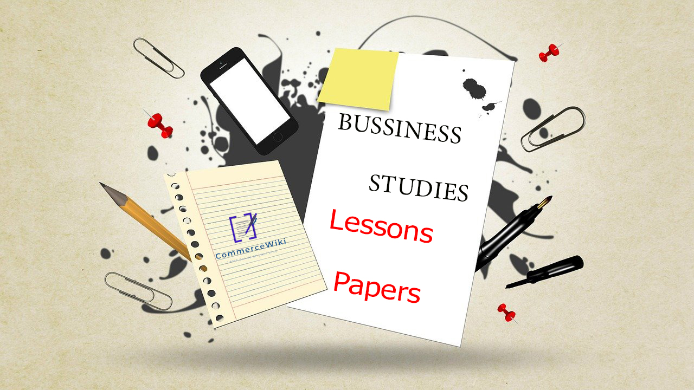

Home
About
Services
Contact Us

Term Test Papers | වාර විභාග ප්රශ්න පත්ර
Target Papers | ආදර්ශ ප්රශ්න පත්ර
Past Papers | පසුගිය විභාග ප්රශ්න පත්ර
Online MCQ Papers | මාර්ගගත බහුවරණ ප්රශ්න පත්ර
01 - ව්යාපාර පදනම හා ව්යාපාර ක්රියාත්මක වන පරිසරය විමසීම
Other Materials
Click Here
02 - ව්යාපාර පරිසරයට අනුගත වීම සඳහා ව්යාපාර,සමාජයීය වගකීම් හා ආචාරධර්ම
Other Materials
Click Here
03 - රජය සමග සම්බන්ධතා පවත්වා ගනිමින් ව්යාපාර කරගෙන යාමේ අවශ්යතාව
Other Materials
Click Here
04 - ව්යාපාර සංවිධාන වර්ග හා ඒවා විධිමත් බව
Other Materials
Click Here
👉Next Page(5th Lesson-8th Lesson